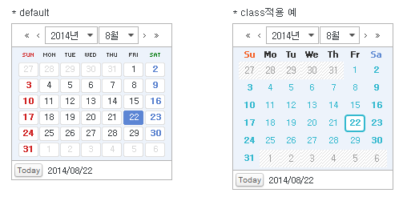

38.InputCalendar
수정 일자 버전 (SP2)
WebSquare5 Studio : 20180117_1349_x86_B
WebSquare5 Engine : 5.0_2.2982B.20180223.154326_1.5
InputCalendar는 달력 컴포넌트와 Input 컴포넌트를 그룹화시킨 복합 컴포넌트로서, 달력에서 선택한 날짜가 Input 컴포넌트에 출력 됩니다.
사용자가 Calendar에서 날짜를 선택하여 Input에 출력시키거나 Input에 직접 날짜를 입력할 수도 있습니다.
또한 validCheck 속성을 이용하여 사용자가 입력한 값이 유효한 날짜인지를 체크하거나 minYear, maxYear 속성을 이용하여 최소/최대 연도를 지정할 수 있는 기능을 제공합니다.
본 컴포넌트는 최상위 div Tag로, 하위에는 복합 Tag로 구현되어있습니다.
38.1Property
Property | Description |
|---|---|
alt | 이미지로 구성된 달력아이콘의 HTML alt 속성에 들어갈 문자열로 웹 접근성 작업 시 필수 입력해야합니다. |
autoFocus SP2 | [default:false, true]nextTabID가 지정되어 있는 경우, maxByteLength 지정값과 일치할 경우 자동으로 focus를 이동시킬지 유무 |
buttonTitle SP2 | inputCalendar의 달력이미지에 title속성값을 준다. 명시된 값을 브라우저에서 달력이미지에 마우스 over시 툴팁형태로 표현한다. 일반적으로 웹접근성 작업 시 설정한다. |
| 웹스퀘어에서 제공하는 5가지 skin[default:class1, class2, class3, class4, class5]Calendr의 스킨을 정의합니다. |
| 캘린더 아이콘 이미지 변경InputCalendar Component 의 calendarImage 속성에 대한 설명입니다. |
calendarImageOver | 캘린더 아이콘 마우스 오버 이미지 변경컴포넌트의 오른쪽에 위치한 달력버튼에 마우스가 올라갔을 때의 이미지 파일 경로. |
| 캘린더의 뷰타입 설정가능, 예:) 년,월,일 > 년,월[default:yearMonthDate, yearMonth, yearMonthDateHour, yearMonthDateTime, yearMonthDateTimeSec]calendar의 표현 방법을 정의합니다. |
cancelButtonShow | [default:false, true]calendar의 X모양의 버튼 표시 여부로 버튼은 우측 하단에 표현됩니다. 해당 버튼을 click하면 calendar가 닫힙니다. |
| calendar의 HTML caption Tag의 값을 설정합니다.(calendar는 table Tag를 이용하여 구성되어있습니다) 일반적으로 웹 접근성 작업 시 입력합니다. |
| HTML의 class속성과 동일한 기능을 제공하며 css파일 또는 style블럭에 정의한 class를 1개 또는 공백(space)를 이용하여 다중 적용이 가능합니다. 기본적으로 엔진 내부에서 각 컴포넌트 마다의 class를 적용하고 있으며 해당 class를 이용하여 컴포넌트의 css를 공통으로 적용할 수 있습니다. 본 컴포넌트는 복합 구조를 가지고 있어 본 속성만으로는 css를 조절하기 어렵기 때문에 하위 Tag에 적용된 class를 이용해야합니다. |
dateValidCheck | 들어온 문자열이 date로서 valid한지 체크. 길이/년월일 등 체크 |
defaultDate | input에 값이 없을 경우 사용하는 기본 날짜. defalutDate 미설정시 default값은 빈 스트링이며, 현재 시스템 날짜가 Calendar에 표시됩니다. |
disableDateValidSet SP2 | [default: false, true] disableBeforeDate 또는 disableAfterDate 속성이 사용된 경우, 입력창에 비활성화된 날짜 값을 입력한 후 blur되었을 ?, 이전에 입력했던 정상적인 값으로 입력창에 나타나는 기능을 설정함. true: 비활성화된 날짜 값을 입력창에 입력 시, 이전에 입력했던 유효한(활성화된 날짜) 값으로 변경되서 입력창에 나타남. false: 기본 값. 비활성화된 날짜 값을 입력창에 입력 시, 입력 가능함. |
displayFormat | input에 표현될 년월일에 대한 format으로 delimiter속성은 무시됩니다. ex) yyyy/MM/dd , yyyy/MM/dd (EEE) 만약 사용자가 입력하는 년월일의 순서가 yyyyMMdd와 다르다면 ioFormat 속성을 함께 적용합니다. ex)dd/MM/yyyy |
displaymessage | [default:false, true]validate API를 호출 하였을 때 검증 실패에 대한 결과 메세지를 표시 할지의 여부. 기본적으로 엔진에서 정의 된 메세지가 표현되며 별도의 메세지를 정의하고자 할 때는 invalidMessageFunc속성을 이용합니다. |
fixedDate | [today]calendar의 하단에 표현되는 날짜를 사용자가 선택한 날짜가 아닌 현재일로 고정하여 표현 할지의 속성. |
focusOnDateSelect | [default:false, true]모바일에서 달력의 날짜 선택시 input에 focus를 줄지 여부 |
footerDiv | [default:false, true]calednar의 선택 된 날짜등이 있는 하위 영역을 table Tag가 아닌 div Tag로 표현할지 여부 |
handleIconClick | 달력 아이콘 클릭시 처리하는 콜백 함수 |
id | 컴포넌트의 ID로 전역객체로 할당되며 script에서 본 id로 컴포넌트에 접근이 가능합니다. |
inputReadOnly | [default:false, true]input의 readOnly 여부 |
invalidMessageFunc | validate API를 호출 하였을 때 검증 실패에 대한 결과 메세지를 별도로 정의 한 Function에서 동적으로 표현 할 수 있는 기능으로 정의 된 function의 이름을 명시합니다. displaymessage속성이 true로 되어있어야 하며 invalidMessage와 동시 적용이 불가합니다. 사용자 Function(아래 예시 참조)에서는 this.getType()을 통해 검증 실패 type(아래 type 참조)과 this.getValue()를 value값을 가져와 메세지를 동적으로 생성하여 return 합니다. type)mandatory, allowChar, ignoreChar, minLength, maxLength, minByteLength, maxByteLength] 예시)function fn_msg(){ var tmpType = this.getType(); var tmpValue = this.getValue(); if(tmpType == "mandatory"){ return "필수 검증 항목입니다."; } } |
ioFormat | [defulat:yyyyMMdd]사용자가 data를 입력하는 순서와 format 매칭시켜주는 기능이다.('y','M','d','H','m' 문자만 허용합니다.) |
keepFixedDate SP2 | fixedDate = "today"로 설정 시, 하단에 표현되는 날짜를 오늘 날짜로 고정 시키는 기능을 설정 true : fixedDate = "today" 설정 시, 하단에 표현되는 날짜가 오늘 날짜로 고정됨. false : fixedDate = "today" 설정 시, 하단에 표현되는 날짜가 사용자가 달력에서 선택한 날짜에 따라 변경됨. |
mandatory | [default:false, true]validate API를 호출 시 필수입력을 체크 할지의 여부. |
maxYear | calendar에 표시되는 최대연도로 config.xml의 calendar하위의 maxYear의 value 속성값이 기본값으로 설정됩니다. ex)<inputCalendar><minYear value="1978" /><maxYear value="2030" /></inputCalendar> |
minYear | calendar에 표시되는 최소연도로 config.xml의 calendar하위의 minYear의 value 속성값이 기본값으로 설정됩니다. ex)<inputCalendar><minYear value="1978" /><maxYear value="2030" /></inputCalendar> |
monthNames | calendar의 월에 해당하는 selectbox에 display값을 설정하는 기능으로 1월부터 12월의 display값을 ,(comma)로 구분하여 정의합니다. ex) Jan,Feb,Mar,Apr,May,Jun,Jul,Aug,Sep,Oct,Nov,Dec |
monthNamesForYearMonthType SP2 | calendarvaluetype이 yearMonth일 경우, calendar의 월에 해당하는 selectbox에 display값을 설정하는 기능으로 1월부터 12월의 display값을 ,(comma)로 구분하여 정의한다. ex) Jan,Feb,Mar,Apr,May,Jun,Jul,Aug,Sep,Oct,Nov,Dec |
nextTabID SP2 | tab으로 이동시 이동할 컴포넌트 ID |
outsideClickEvent | calendar 컴퍼넌트 calendarValueTYpe = "yearMonth" 시 년/월 변경영역 밖에 클릭시 이벤트 발생 여부 |
placeholder SP2 | HTML5의 placeholder 기능으로 사용자에게 알려줘야 할 문구(hint)등을 명시한다. 브라우저마다의 동작 방식이 상이할 수 있다.(예를 들어 IE는 focus시 hint가 사라지지만 Chrome의 경우 text가 입력 되어야 사라진다.) |
readOnly | [default:false, true]readonly의 여부로 HTML의 readonly속성과 동일한 기능을 제공합니다. 달력 아이콘과 input 모두 readonly로 적용되며 input만 readonly 시킬 때는 inputReadOnly 속성을 설정합니다. |
| html로 랜더링 시 div 태그로 구성할지 여부 체크(default:table)[default:false, true]calednar를 div로 구성할지의 여부로 기본적으로 table로 구성되어있습니다. |
| (native)접근성관련 프로젝트 시 이용, renderDiv 속성을 true 변경이랑 동일함.[default:component, native]컴포넌트의 레이아웃 구조를 설정합니다. component : 내부적으로 div 및 table을 이용하여 달력을 표현합니다. 웹 접근성을 위해서는 사용을 지양해야 합니다. native : 주로 웹 접근성을 위해 사용되는 속성으로 달력 내부의 selectbox를 html의 select태그를 사용하여 렌더링하며, 달력의 숫자 및 버튼들을 html의 button태그로 렌더링합니다. |
rightAlign | calendar를 오른쪽으로 정렬하여 표시함. |
setCurrentDate | 날짜 input 현재일 출력 유무 |
showPlaceHolderOnReadOnly SP2 | 읽기전용 모드(readOnly="true"에서도 placeholder 속성으로 지정된 값을 표시. true: 표시. false (기본 값): 표시하지 않음. 관련 속성: readOnly, placeholder |
style | InputCalendar의 style 속성 |
summary | HTML의 table Tag의 summary 속성과 동일한 기능을 제공합니다. 일반적으로 웹접근성 화면 구현시 사용됩니다. |
tabIndex | Tab Key를 이용 한 컴포넌트의 포커스 순서로 HTML의 tabindex속성과 동일한 기능을 제공합니다. |
title | HTML의 title속성과 동일한 기능으로 명시 된 값을 브라우저에서 마우스 over시 툴팁형태로 표현한다. 일반적으로 웹접근성 작업 시 설정합니다. 일반적으로 웹접근성 작업 시 설정합니다. |
toolTip | 웹스퀘어에서 만든 toolTip으로 컴포넌트의 추가정보를 명시합니다. 마우스 over시 표현됩니다. |
useAnchor | 앵커를 이용해 책갈피로 이동시킬것인지 여부. renderDiv옵션이 false인 경우만 동작하며(inputCalendar가 table로 그려졌던 하위 버전의 옵션) 센스리더 사용자에겐 달력 열기 버튼을 사용할 수 없도록 하기 위해서 useAnchor=false를 줌. |
useCalendarTabIndex | useAnchor = false인 경우에도 달력에 tab키로 포커스 이동을 가능하게 할지에 대한 여부. |
validCheck | [default:false, true]input에 입력된 값이 유효한 날짜인지를 check하여 alert을 띄울지의 여부. |
visibleHourList SP2 | [default:1,2,...,23,24] 시간이 표시되는 달력에서 시간 항목을 설정하는 속성. [,]를 구분자로 사용한다. (ex) calendarValueType="yearMonthDateTime", visibleHourList="5,10,15,20" 인 경우, 시간 목록 선택 시 [5,10,15,20] 목록만 나타난다. (ex) https://inswave.com/jira/browse/SKT-691 참조 |
visibleHourList SP2 | [default:1,2,...,59,60] 분이 표시되는 달력에서 분 항목을 설정하는 속성. [,]를 구분자로 사용한다. (ex) calendarValueType="yearMonthDateTime", visibleMinList="0,5,10,15,20,25,30,35,40,45,50,55" 인 경우, 분 목록 선택 시 5의 배수 목록만 나타난다. (ex) https://inswave.com/jira/browse/SKT-691 참조 |
visibleHourList SP2 | [default:1,2,...,59,60] 초가 표시되는 달력에서 초 항목을 설정하는 속성. [,]를 구분자로 사용한다. (ex) calendarValueType="yearMonthDateTime", visibleSecList="0,5,10,15,20,25,30,35,40,45,50,55" 인 경우, 초 목록 선택 시 5의 배수 목록만 나타난다. (ex) https://inswave.com/jira/browse/SKT-691 참조 |
weekStartsOn | [default:0, 1, 2, 3, 4, 5, 6]calendar의 시작 요일을 설정합니다(0:일, 1:월, 2:화, 3:수, 4:목, 5:금, 6:토) |
wmode | [default:false, true] wmode 사용 여부로 항목이 object(activeX 또는 flash)에 가려 질 경우 해당 속성을 사용합니다. wmode가 true이면 object 태그보다 상위에 보이도록 하는 설정으로 본 컴포넌트에 wmode를 설정하는 것이 아닌 object(activeX, flash 등)태그의 wmode를 사용하는 것을 권장합니다. |
yearSuffix | 연도 selectbox의 display되는 값의 숫자(연도) 뒤에 들어갈 문자열. 연도만 display 시킬 때는 $blank로 정의합니다. |
38.2브라우저 캡쳐화면
[ property : calendarClass ]

[그림 38-1]1
<w2:inputCalendar renderType="component" weekStartsOn="0" id="inputCalendar1" renderDiv="true" style="position: relative;width: 150px;height: 23px;" focusOnDateSelect="false" footerDiv="false" calendarValueType="yearMonthDate"> </w2:inputCalendar>
[ property : displayFormat ]
foramt | 설명 |
|---|---|
'y' | year(년도) |
'M' | Month(월) |
'd' | day(일) |
'H' | Hour(시) |
'm' | minute(분) |

[그림 38-2]02
<w2:inputCalendar renderType="component" weekStartsOn="0" id="inputCalendar1" renderDiv="true" style="position: relative;width: 150px;height: 23px;" focusOnDateSelect="false" footerDiv="false" calendarValueType="yearMonthDate" displayFormat="" >
</w2:inputCalendar>
[그림 38-3]03
<w2:inputCalendar renderType="component" weekStartsOn="0" id="inputCalendar1" renderDiv="true" style="position: relative;width: 150px;height: 23px;"
focusOnDateSelect="false" footerDiv="false"
calendarValueType="yearMonthDate" displayFormat="MM-dd-yyyy" >
</w2:inputCalendar>
[그림 38-4]04
<w2:inputCalendar renderType="component" weekStartsOn="0" id="inputCalendar1" renderDiv="true" style="position: relative;width: 150px;height: 23px;"
focusOnDateSelect="false" footerDiv="false"
calendarValueType="yearMonthDate" displayFormat="yyyy년 MM월 dd일" >
</w2:inputCalendar>38.3class 적용과 스타일 변경

참고사항:
달력을 호출하는 버튼은 프로퍼티 창 calendarImage, calendarImageOver에서 선택할 수 있습니다.
프로퍼티 중 class는 input에 대한 class 입니다.
css에서 디자인을 수정할 때는 같은 레벨의 클래스를 추가해야 합니다.
ex) class 프로퍼티에 입력한 클래스가 ‘customClass’ 일 경우 해당 css 파일에서,
.customClass.w2inputCalendar_input {width:99%;}
프로퍼티 중 calendarClass는 팝업으로 뜨는 캘린더에 대한 class 입니다.
프로퍼티에서 ‘customClass’를 입력했을 경우, DOM 상에서는 클래스가 .w2calendar_customClass로 들어가기에
해당 css 파일에서는 클래스명을.w2calendar_customClass로 선언하여 수정해야 합니다.
ex) class 프로퍼티에 입력한 클래스가 ‘customClass’ 일 경우 해당 css 파일에서,
.w2calendar_customClass .w2calendar_content {width:99%;}
팝업으로 뜨는 캘린더 내부의 디자인 수정을 하려면 위와 같은 작업을 각각 클래스에 대해 해야 하므로, 퍼블리싱 공수가 많이 들어갑니다.
class를 이용해서 캘린더의 이미지를 변경시킬수있습니다.
아래는 xin이라는 class를 적용시킨 예시입니다.(calendarClass에는 적용한 class앞에 w2calendar_가 붙습니다.)
.w2calendar_xin{border:2pxsolid#d1d0ca;height:210px;width:199px;} .w2calendar_xin .w2calendar_content{height:156px;} .w2calendar_xin .w2calendar_wrap{border:0;height:210px} .w2calendar_xin .w2calendar_header, .w2calendar_xin .w2calendar_content_table{width:199px} .w2calendar_xin .w2calendar_selectbox_year{width:60px} .w2calendar_xin .w2calendar_content{border-bottom:1pxsolid#a9a9a9} .w2calendar_xin .w2calendar_header .w2calendar_header_last_year{ background:url(/DesignGuide/images/calendar/year_last.gif)no-repeat} .w2calendar_xin .w2calendar_header .w2calendar_header_last_month{ background:url(/DesignGuide/images/calendar/month_last.gif)no-repeat} .w2calendar_xin .w2calendar_header .w2calendar_header_next_month{ background:url(/DesignGuide/images/calendar/month_next.gif)no-repeat} .w2calendar_xin .w2calendar_header .w2calendar_header_next_year{ background:url(/DesignGuide/images/calendar/year_next.gif)no-repeat} .w2calendar_xin .w2calendar_col_day, .w2calendar_xin .w2calendar_col_date{height:22px} .w2calendar_xin .w2calendar_day0{ background:url(/DesignGuide/images/calendar/day_sun.gif)no-repeat100%0} .w2calendar_xin .w2calendar_day1{ background:url(/DesignGuide/images/calendar/day_mon.gif)no-repeat100%0} .w2calendar_xin .w2calendar_day2{ background:url(/DesignGuide/images/calendar/day_tue.gif)no-repeat100%0} .w2calendar_xin .w2calendar_day3{ background:url(/DesignGuide/images/calendar/day_wed.gif)no-repeat100%0} .w2calendar_xin .w2calendar_day4{ background:url(/DesignGuide/images/calendar/day_thu.gif)no-repeat100%0} .w2calendar_xin .w2calendar_day5{ background:url(/DesignGuide/images/calendar/day_fri.gif)no-repeat100%0} .w2calendar_xin .w2calendar_day6{ background:url(/DesignGuide/images/calendar/day_sat.gif)no-repeat100%0} .w2calendar_xin .w2calendar_col_date{background:#fff} .w2calendar_xin .w2calendar_selected, .w2calendar_xin .w2calendar_date_over, .w2calendar_xin .w2calendar_date_over button{ color:#fff; background:url(/DesignGuide/images/calendar/bg_w2calendar_selected.gif)no-repeat } .w2calendar_xin .w2calendar_go_today, .w2calendar_xin .w2calendar_go_today_over{ width:39px; height:18px; background:url(/DesignGuide/images/calendar/b_date.gif)no-repeat } .w2calendar_xin .w2calendar_date_off, .w2calendar_xin .w2calendar_date_off button{color:#9A9595;text-align:center;} .w2calendar_xin .w2calendar_day_6, .w2calendar_xin .w2calendar_day_6 button{color:#488EFF;font-weight:bold;} .w2calendar_xin .w2calendar_day_0, .w2calendar_xin .w2calendar_day_0 button{color:#FF489C;font-weight:bold;} .w2calendar_xin .w2calendar_footer_date{padding-left:10px;color:#666} .w2calendar_xin .w2calendar_footer{margin:1px005px;}
38.4웹 접근성 가이드
키보드만으로 모든 기능을 사용 가능하며 사용법은 calendar 컴포넌트와 유사합니다, 아래와 같이 renderType=”native” 속성을 반드시 사용하고,
화면낭독기 사용자가 달력 아이콘을 사용할수 있도록 해줄지에 따라 useAnchorMove와 title 속성을 의미에 맞게 적절히 사용합니다.
화면낭독기 사용자에게 달력 아이콘 사용을 허가할 경우에는 아래와 같이 작성합니다.
공통설정(config.xml)으로 <useAnchor value="true" />를 추가 할 경우 달력 아이콘에 anchor로 감싸지며 접근성에 위배되지 않습니다. <renderType value="native" />인 경우 달력 내에 포함된 selectbox가 native combobox로 그려집니다.
<w2:inputCalendar id="inputCalendar1" style="width:167px; height:21px;" renderType=”native” useAnchorMove=”true” title="생년월일 입력 또는 달력에서 선택" />
반대의 경우, 즉 달력 아이콘 사용을 불허할 경우엔 아래와 같이 작성합니다.
<w2:inputCalendar id="inputCalendar1" style="width:167px; height:21px;" renderType=”native” useAnchorMove=”false” title="생년월일" />
38.5CSS Overriding
inputCalendar 컴포넌트를 designView에 그리고 property 의 Class 에 사용자 정의 class를 정의한 다음 Preview 합니다.
inputCalendar 컴포넌트를 designView에 그리고 property 의 Class 에 사용자 정의 class를 정의한 다음 Preview 합니다.

No | Class | Description |
|---|---|---|
1 | w2inputCalendar_div, ipt_cal | w2inputCalendar_div 는 웹스퀘어 엔진에서 정의된 클래스입니다, 기본적으로 html 로 떨구는 시점에서 자동으로 부여됩니다. w2calendar_class5 는 calendarClass 의 속성값 지정시 웹스퀘어 엔진에서 부여되는 클래스입니다.ipt_cal 은 사용자 정의 클래스 입니다. 해당 클래스를 이용하여 디자인을 바꿀 수 있습니다. |
2 | w2calendar_class5 | w2calendar_class5 는 calendarClass 의 속성값 지정시 캘린더의 스킨 변경이 가능합니다. |
3 | ipt_cal | 사용자 정의 클래스로 Stylesheet_ext.css 다음에 적용됩니다. 동일한 스타일 시트를 정의함으로써 overriding(덮어쓰기) 됩니다. |
38.6주의사항 및 Tip
참고사항:
달력을 호출하는 버튼은 프로퍼티 창 calendarImage, calendarImageOver에서 선택할 수 있습니다.
프로퍼티 중 class는 input에 대한 class 입니다.
css에서 디자인을 수정할 때는 같은 레벨의 클래스를 추가해야 합니다.
ex) class 프로퍼티에 입력한 클래스가 ‘customClass’ 일 경우 해당 css 파일에서,
customClass.w2inputCalendar_input {width:99%;}
프로퍼티 중 calendarClass는 팝업으로 뜨는 캘린더에 대한 class 입니다.
프로퍼티에서 ‘customClass’를 입력했을 경우, DOM 상에서는 클래스가 .w2calendar_customClass로 들어가기에
해당 css 파일에서는 클래스명을.w2calendar_customClass로 선언하여 수정해야 합니다.
ex) class 프로퍼티에 입력한 클래스가 ‘customClass’ 일 경우 해당 css 파일에서,
.w2calendar_customClass .w2calendar_content {width:99%;}
팝업으로 뜨는 캘린더 내부의 디자인 수정을 하려면 위와 같은 작업을 각각 클래스에 대해 해야 하므로, 퍼블리싱 공수가 많이 들어갑니다.
class를 이용해서 캘린더의 이미지를 변경시킬수있습니다.
아래는 xin이라는 class를 적용시킨 예시입니다.(calendarClass에는 적용한 class앞에 w2calendar_가 붙습니다.)
접근성 지원을 위해선 renderType 속성을 native로 설정하고, 달력의 의미에 맞는 명확한 title 속성을 기술합니다.
사용시 Checkpoint
renderType 속성을 ”native”로 설정하였는가?
title 속성을 내용에 맞게 기술하였는가?
포커스될 때 테두리가 명확하게 나타나는가?